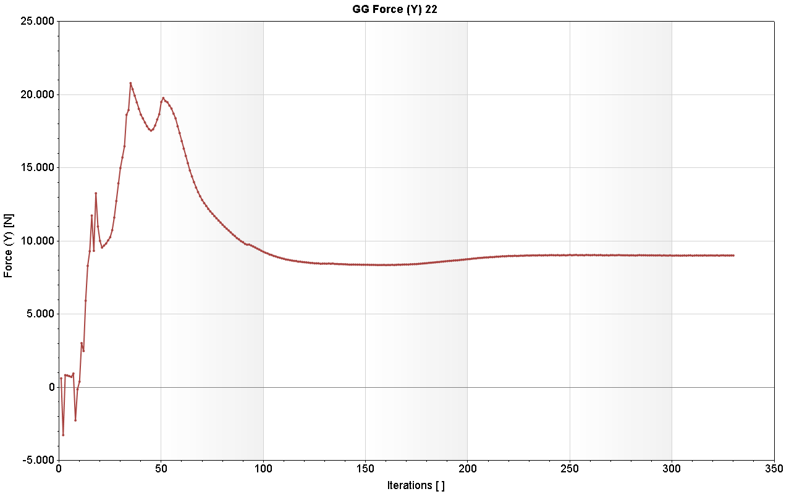

Aerodynamic Modeling

Parametric propeller model used for CFD simulation.

Computed lift force convergence behavior.
Full quadcopter mechanical assembly.
CFD airflow visualization over propeller surface.